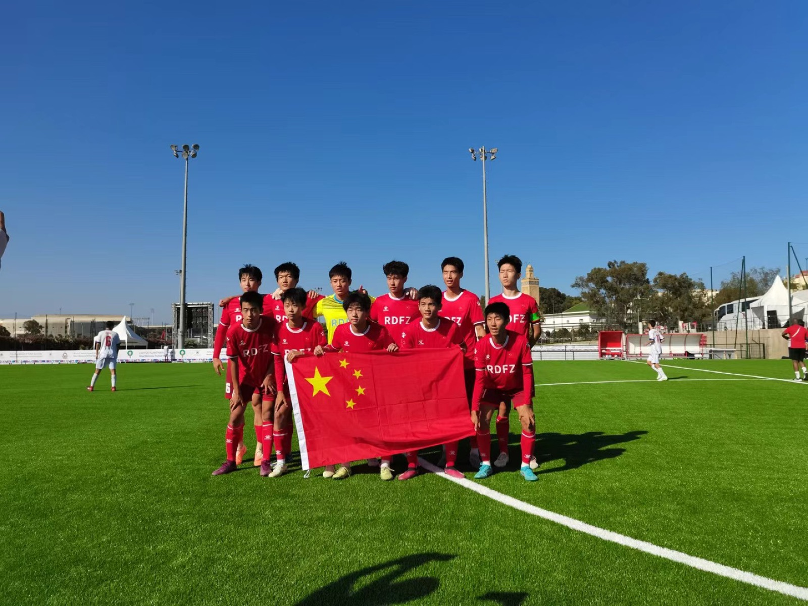
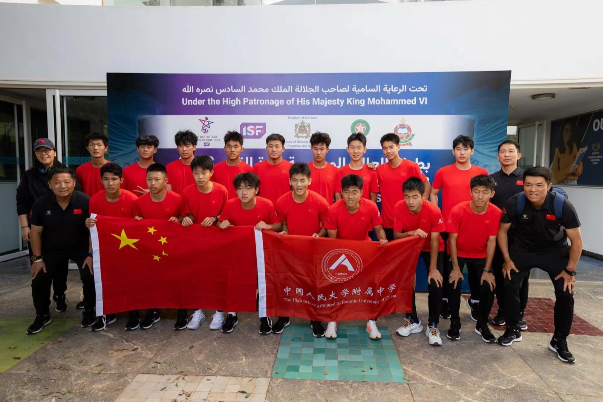
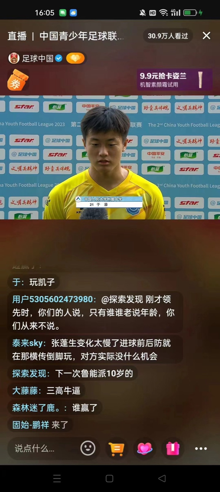
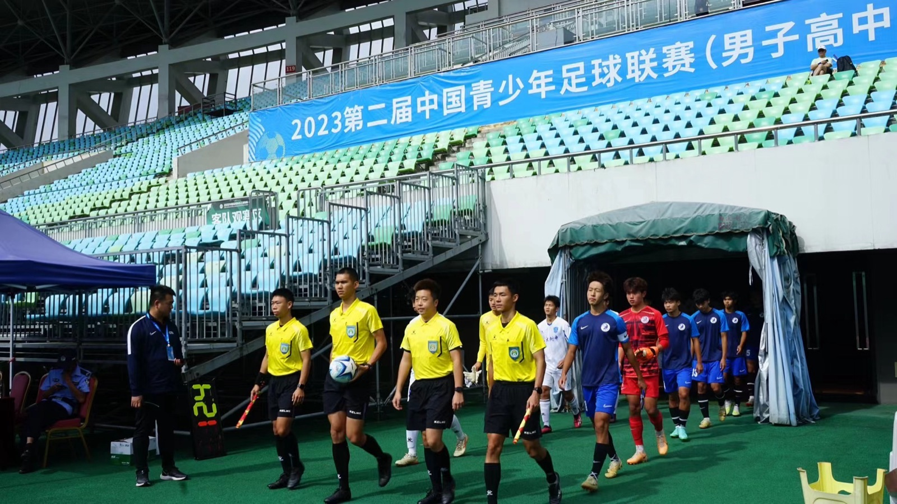
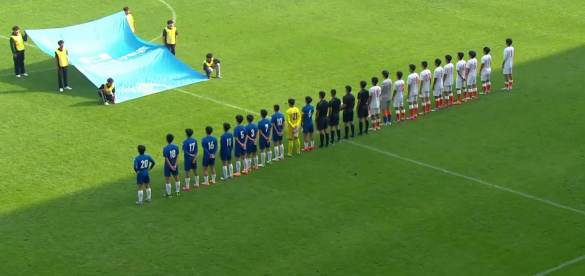
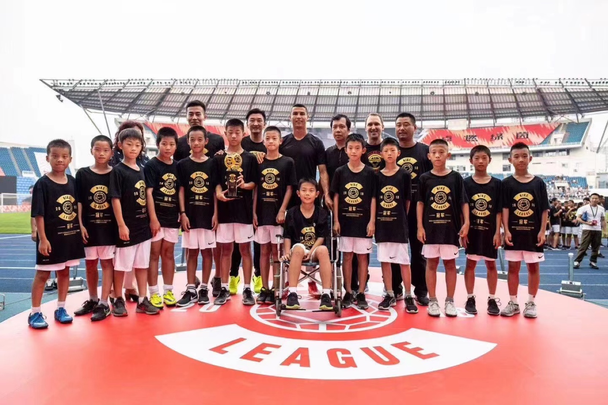
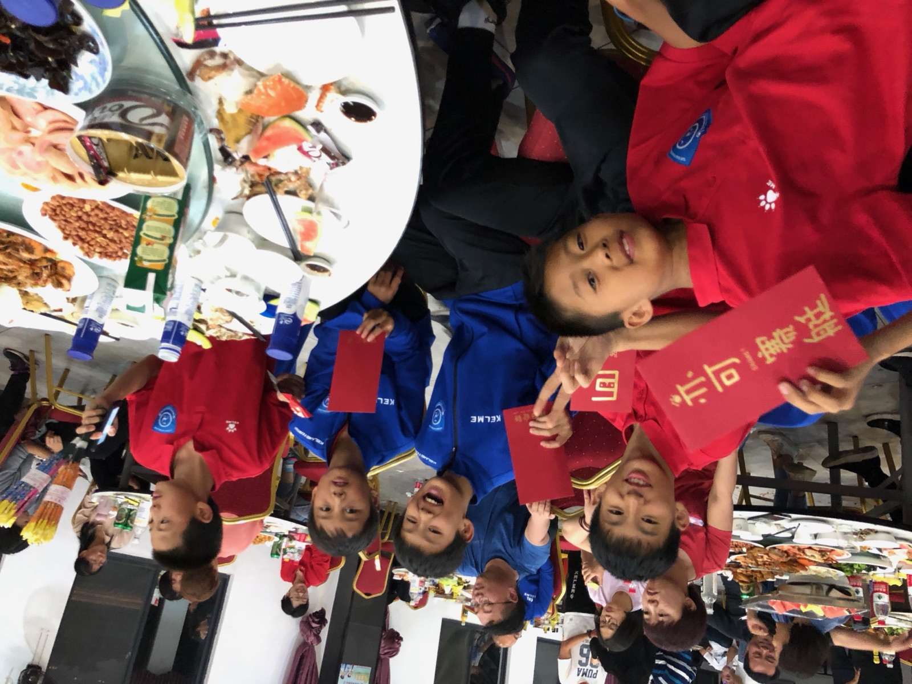

Soccer
Goalkeeper, #21, for The High School Affiliated to Renmin University of China.
We won the Gothia Cup in Sweden. In 2023 we went to Rabat for the ISF World Schools Championship and finished 19th, and I started in goal in the U17 China Youth Football League. My post-match interview went out on the national livestream and got about 309,000 views. In October 2023 I was certified as a National First-Class Athlete.
The oldest photo here is from 2018, when my youth team won the Nike League. Now I run the UMN Chinese Soccer Team.









